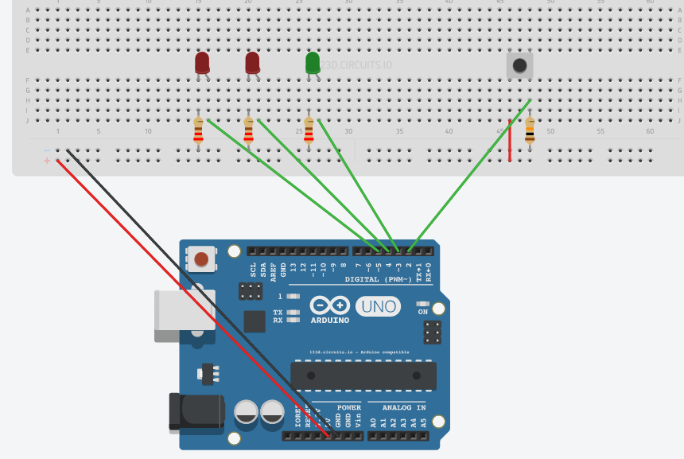
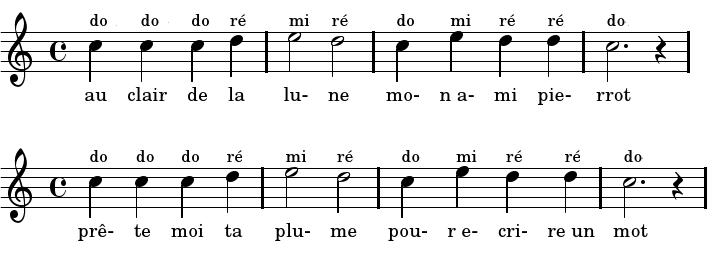
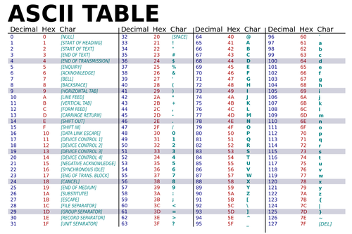
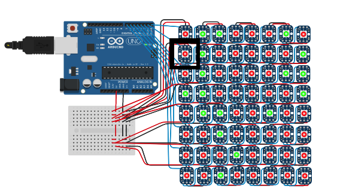
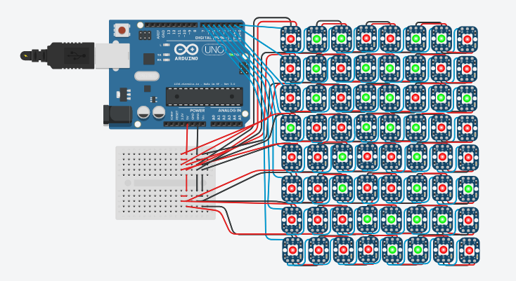
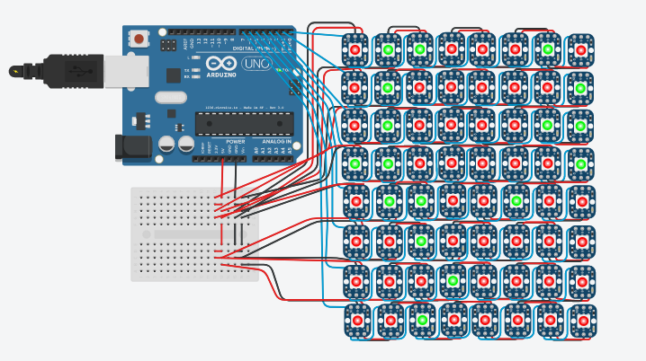

TP Manipulation de tableaux :
Mise en œuvre avec Arduino
Lors des deux prochaines séances de TP vous allez apprendre à manipuler des tableaux (déclaration, initialisation, parcours...). Pour cela vous allez réaliser vos premiers codes exécutés sur une puce. Vous allez ainsi utiliser des tableaux pour allumer des diodes en fonction de la température, jouer de la musique, déchiffrer des phrases chiffrées...
Arduino, et son récent synonyme Genuino2, est une marque qui couvre des cartes matériellement libres sur lesquelles se trouve une puce (d'architecture Atmel AVR comme l'Atmega328p, et d'architecture ARM comme le Cortex-M3 pour l'Arduino Due). Le microcontrôleur peut être programmé pour analyser et produire des signaux électriques, de manière à effectuer des tâches très diverses comme la domotique (le contrôle des appareils domestiques - éclairage, chauffage…), le pilotage d'un robot, de l'informatique embarquée, etc. (définition Wikipedia)
Organisation
Il y a 5 exercices :
- les exercices 1 et 2 sont à faire la première semaine (ainsi que la prise en main),
- l'exercice 3 est à faire la deuxième semaine,
- les exercices 4 et 5 sont facultatifs et peuvent être faits en tutorat et Prog++.
Prise en main
Les deux prochaines séances de TP vont se dérouler de la même manière :
- Vous vous connectez sur votre espace personnel tinkercad (si vous n'en avez pas, choisissez "S'inscrire" puis "Créer un compte personnel").
- Vous lisez l'énoncé de l'exercice.
- Vous dupliquez le plan de montage Arduino dans votre espace de travail.
- Vous répondez aux questions posées en codant directement dans la page web et testez sur l'émulateur.
- Vous pouvez également réserver un kit sur ce site, venir le chercher en salle 308 et tester chez vous votre code.
L'émulateur
Nous allons commencer par prendre en main l'émulateur.
- Dupliquez ce montage et importez-le dans votre espace de travail en ligne tinkercad (Copier et éditer).
- La partie centrale contient le plan de montage. Vous pouvez zoomer, déplacer le schéma, changer les couleurs des fils, les débrancher... (appuyer sur "Edit" si vous n'êtes pas en mode édition).
- La partie à droite est celle où vous mettrez votre code (cliquer sur "Code" si la partie à droite n'est pas affichée).
- Il y a deux fenêtres à activer : le debugger (icône de bug, pour faire du pas à pas lors de l'exécution) et le moniteur série (en bas) permettant de voir les affichages (via Serial.print("texte");). Pour voir le contenu d'une variable, il suffit de passer la souris dessus.
- Le code est automatiquement sauvegardé dès qu'il est modifié.
- Pour lancer l'exécution du code, il faut appuyer sur "Démarrer la simulation".
- Lorsque le code s'exécute vous ne pouvez pas le modifier : il faut l'arrêter via le bouton "Arrêter la simulation".
- Vous pouvez également ajouter des composants électriques à votre circuit. Mais vous n'en aurez pas besoin lors de ces deux séances. Vous n'aurez pas non plus besoin de comprendre la partie "génie électrique". Seule la partie développement nous intéresse ici.
Savoir lire un circuit Arduino
Même si c'est très intéressant nous ne vous demandons pas, ici en TP, de comprendre le pourquoi du comment du montage. En tant qu'informaticien, il vous faut simplement comprendre comment récupérer une information (par exemple ici le fait qu'on appuie ou que l'on relâche le bouton) mais également comment envoyer une information à un composant du circuit (ici allumer ou éteindre une diode).
Nous utiliserons les deux types de bornes de l'arduino :
- les bornes numériques ("digital"), numérotées de 0 à 13, en haut de la carte. Chaque borne peut être utilisée en entrée ou en sortie (via l'instruction pinMode).
- les bornes analogiques ("analog in"), numérotées de A0 à A5, en bas à droite. Elles sont uniquement utilisées en entrée.
Dans ce circuit, ce qui va nous intéresser c'est l'endroit où sont placés les fils verts. La diode verte est reliée à la borne numéro 3 de la carte. Les deux autres diodes sont connectées aux bornes 4 et 5. Le bouton est quant à lui, relié à la borne 2.

La structure d'un code source
En écrivant le code source adéquat, il est possible de gérer les évènements (savoir qu'une personne a appuyé sur le bouton). Il est également possible de donner des instructions aux composants (dire à une diode de s'allumer).
Comme en Processing, le code pour parler à un Arduino (ou l'écouter) se fait à l'aide de deux fonctions :
// Première fonction appelée une et une seule fois au lancement
// Permet d'initialiser le fonctionnement des composants
// Lors des TP cette fonction devrait ressembler presque toujours au code ci-dessous.
void setup() {
//vitesse de connection à l'Arduino
Serial.begin(9600);
//rédaction de vos tests unitaires
Serial.println("tests : debut");
Serial.println("dechiffreUnChiffre");
Serial.println(dechiffreUnChiffre(1, 2) == 3);
Serial.println(dechiffreUnChiffre(1, 9) == 0);
// ...
Serial.println("tests : fin");
// configuration des composants
}
et
// Fonction qui s'exécute en boucle tant que vous n'arrêtez pas la simulation void loop()
Dans l'exemple ci-dessous dans la fonction "setup" il faut indiquer, pour chaque broche (en anglais pin), si elle va commander un composant ou si elle va permettre de récupérer une information.
// déclaration des variables qui seront utilisées dans Loop
int state;
// Première fonction appelée une et une seule fois au lancement
void setup() {
Serial.begin(9600); // connection à 9600 bauds avec l'Arduino
// Initialisation des composants branchés sur la carte
pinMode(3, OUTPUT); // on enverra des informations à la diode branchée sur la broche 3
pinMode(4, OUTPUT); // on enverra des informations à la diode branchée sur la broche 4
pinMode(5, OUTPUT); // on enverra des informations à la diode branchée sur la broche 5
pinMode(2, INPUT); // on recevra des informations du bouton branché sur la broche 2
Serial.print("session démarrée"); // affichage sur le serial Monitor
}
// Fonction qui s'exécute en boucle tant que vous n'arrêtez pas la simulation
void loop() {
state = digitalRead(2); // lecture sur la broche 2 (répond HIGH ou LOW)
// si appui sur bouton alors state vaut HIGH
if (state == HIGH)
{
// Allume les diodes rouges
digitalWrite(5, HIGH);
digitalWrite(4, HIGH);
// Eteint la diode verte
digitalWrite(3, LOW);
// Attendre une seconde
delay(1000);
}
else {
digitalWrite(5, LOW);
digitalWrite(4, LOW);
digitalWrite(3, HIGH);
}
delay(1000);
}
 Le code est en C++, pas en Java. Ça ne changera pas grand chose ici.
Voici les principales différences que vous rencontrerez :
Le code est en C++, pas en Java. Ça ne changera pas grand chose ici.
Voici les principales différences que vous rencontrerez :
// Le mot-clé "const" indique simplement qu'une variable est constante,
// comme le fait "final" en Java. Ici l'entier FREQ restera toujours à 200.
// En général on écrit ces variables en majuscules.
const int FREQ = 200;
// les tableaux se déclarent légèrement différemment (position des []) :
char tabCaracteres[64]; // déclaration d'un tableau de 64 caractères, sans initialisation
int tabEntiers[] = {5, 1, 3}; // déclaration avec initialisation
Pour vous entraîner à trouver facilement les entrées et sorties d'un montage arduino, réalisez ce petit exercice. Tout d'abord dupliquez le schéma suivant. Il est constitué de 3 composants photosensibles qui retournent une valeur propotionnelle à l'intensité lumineuse qu'elle capte. En haut à gauche est positionnée une LED RGB capable de générer une lumière à partir de 3 valeurs qui lui sont indiquées. La patte de gauche est celle de la composante rouge, la troisième en partant de la gauche est celle du bleu et la plus à droite est celle du vert. La vidéo suivante illustre le résultat final obtenu.
Dans le code qui vous est donné, il manque les numéros de PIN associés à chaque patte de la LED RGB. Il manque également le mode d'accès à ces pattes (INPUT ou OUTPUT). Etudiez le montage et complétez le code pour obtenir un résulat similaire à celui de la vidéo.
Exercice 1 - Indicateur de température moyenne
Dupliquez ce montage sur votre espace personnel.
Une fois le code terminé, ce circuit permettra de
- récupérer 100 températures successives (via le capteur de température) ;
- dans la version 1 : allumer la diode rouge si la température est supérieure à 25 degrés et la bleue sinon ;
- dans la version 2 : allumer la diode rouge si la moyenne de 100 températures est supérieure à 25 degrés, la diode bleue sinon.
Question 1
Complétez le code suivant en suivant les indications en commentaires.
int tempSensor = ; // Indiquer le numéro de broche sur laquelle est branché le capteur de température (chiffre entre 0 et 5)
void setup() {
Serial.begin(9600);
// Indiquer que les broches des diodes sont en mode OUTPUT
pinMode(,);
pinMode(,);
Serial.println("process start");
}
// conversion de la mesure reçue par le capteur vers une température
// cette fonction prend en paramètre un entier (une tension)
// et retourne une température de type réel
float capteurToTemperature(int valeur)
{
return (((valeur * 5.0 / 1024) - 0.5) * 100.0);
}
void loop() {
delay(100); // juste pour avoir le temps de cliquer sur le thermomètre
//en fonction de l'ordinateur sur lequel vous exécutez ce code
//il est possible que vous ayez à aller jusqu'à la valeur 1000.
//Comme montré sur la vidéo, lors de l'exécution,
//cliquez sur le thermomètre pour faire varier la température.
// À chaque passage dans loop il faut récupérer la température
int readTemp = analogRead(tempSensor);
// il faut convertir cette tension en température
???;
// Allumer la diode en fonction de cette valeur
if (?????>25)
{
digitalWrite(,);
digitalWrite(,);
}
else {
digitalWrite(,);
digitalWrite(,);
}
}
Question 2
Pour faire la version 2, il vous faudra apporter quelques modifications à ce code :
- Créer un tableau de 100 entiers
- Lors des 100 premiers passages (et uniquement les 100 premiers) dans la fonction loop il faudra stocker la température
- Après ces 100 passages il faut calculer la moyenne des 100 valeurs
- Allumer la diode rouge si la température moyenne est supérieure à 25 degrés, la diode bleue sinon.
Exercice 2 - Musique
L'objectif de cet exercice est de pouvoir jouer une mélodie à l'aide d'un Arduino. Pour cela, téléchargez le montage suivant.
A l'aide d'un composant (buzzer) il est possible de faire jouer une mélodie à un Arduino.
Une note est une fréquence jouée pendant un temps prédéterminé. La commande suivante permet de faire émettre un son au composant pendant un temps prédéterminé.
tone(buzzerPin, frequence, duration); //buzzerPin : numéro de la broche sur laquelle est branché le buzzer //frequence : fréquence de la note /*note frequence c (Do#3) 262 Hz d (Ré) 294 Hz e (Mi) 330 Hz f (Fa) 349 Hz g (Sol) 392 Hz a (La) 440 Hz b (Si) 494 Hz */ //duration : durée qu'il faut jouer cette note en ms
Question 1
Etudiez la partition suivante et écrivez le code permettant de jouer les 11 premières notes .
Pour cette question, considérez que :
- une note noire = 200ms et une blanche à 2*200ms,
- après chaque note l'exécution du code doit effectuer une pause (ne pas passer à la ligne de code suivante) afin que le buzzer puisse effectivement jouer le son. Pensez également à prévoir dans ce temps de pause un tout petit délai supplémentaire afin que vous entendiez un petit blanc entre deux notes successives,
- la première ligne ne doit se jouer d'une et une seule fois.
Question 2
Vous aurez remarqué que répondre à la question précédente a été plutôt pénible. Vous avez certainement fait beaucoup de copier/coller/modifier.
Nous vous proposons d'utiliser des tableaux afin de simplifier l'écriture d'une mélodie (notes + tempo). Reprenez le code de la question précédente, supprimez tout le code situé dans la fonction loop() et créez 3 tableaux :
- un tableau de notes permettant de stocker les 22 lettres de la partition correspondant aux 22 notes.
char notes [] = {????}; - un tableau de rythme permettant de stocker les 22 rythmes (durées) des 22 notes.
int beats [] = {????}; - un tableau de fréquences permettant de stocker les 6 fréquences données en entête de code.
int frequencies [] = {????};
Créez la fonction
int frequency(char note)permettant en entrée de donner une note et en retour d'obtenir sa fréquence. Par exemple
frequency('e');
doit retourner la valeur 330.
Maintenant écrivez le code permettant de jouer automatiquement la musique du tableau notes[] avec le rythme décrit dans le tableau beats[].
Question 3
Téléchargez le montage suivant et exécutez-le. Le code est fait pour jouer les notes dans l'ordre dans lequel elles apparaissent dans le tableau. Malheureusement, ces notes ne sont pas dans le bon ordre. Le bon ordre est donné par le tableau ordreNotes[]. La première note à jouer est donc en case numéro 30 du tableau notes[] car le chiffre 0 apparaît dans la case 29 du tableau ordreNotes[].
Par contre le tableau beats[] est lui dans le bon ordre. La durée 8 est bien celle de la première note à jouer (celle en case 29). Vous suivez toujours ?
Corrigez le code contenu dans la fonction loop() afin que les notes soient jouées dans le bon ordre, et découvrez la mélodie !
Exercice 3 - Simon
Fin des années 70, la société MB a produit un jeu très original et faisant travailler la mémoire. Le principe est simple. La machine est capable d'émettre une note en même temps que d'allumer une diode (c'est toujours la même note qui est associée à cette diode). À chaque tour l'objectif pour le joueur est de reproduire la suite de sons proposée par la machine. À chaque tour la machine ajoute un son. La partie s'arrête quand le joueur se trompe dans la séquence à reproduire.
Nous allons recréer ce jeu à l'aide d'un Arduino.
Question 1
Téléchargez le plan suivant. Il simule l'appareil permettant de jouer à "Simon".
Une partie du code est également fournie. Prenez le temps de regarder ce code. Remarquez en particulier que :
- le tableau FREQ_SON[] est un tableau de 4 entiers permettant d'associer à chaque LED une fréquence sonore.
- le tableau sequenceSimon[] est le tableau contenant la séquence (tirée aléatoirement) de sons à reproduire.
- le tableau sequenceJoueur[] est le tableau dans lequel sont stockées les réponses du joueur.
La boucle de jeu est gérée dans loop(). Différents modes s'y enchaînent :
| Mode | Description |
|---|---|
| DEBUT | effectue la séquence lumineuse de démarrage puis passe en mode AUGM_SEQ_SIMON. |
| AUGM_SEQ_SIMON | ajoute un élément à trouver. La fonction augmenteSequence() ajoute aléatoirement un chiffre entre 0 et 4 dans la première case libre du tableau sequence. Quand le tableau est plein alors on passe en mode VICTOIRE. |
| JOUE_SEQ_SIMON | joue la séquence de notes à reproduire. Au début c'est une seule note, puis deux, puis trois... Le nombre de notes à jouer à un instant donné est mémorisé dans la variable tailleSeqSimon. On passe quoi qu'il arrive en mode SAISIE_JOUEUR une fois que la séquence à reproduire par le joueur est diffusée. |
| SAISIE_JOUEUR | récupère le bouton pressé et ajoute sa réponse au tableau sequenceJoueur[]. Le nombre de réponses données à un tour donné est mémorisé dans la variable tailleSeqJoueur. On teste si on a perdu. Si oui on passe en mode ECHEC pour faire clignoter toutes les leds. Si non on passe en mode AUGM_SEQ_SIMON (pour ajouter une note à reconnaître). |
| VICTOIRE | gère une animation indiquant la victoire puis revient en début de jeu. |
| ECHEC | gère une animation indiquant la défaite puis revient en début de jeu. |
Vous n'avez pas besoin d'y toucher ! Vous avez simplement à coder les fonctions appelées dans loop().
Voici le code des déclarations de constantes et variables, et la fonction setup(). Notez en particulier que, dans le code, chaque LED est identifiée par un entier entre 0 et 3, qui est différent de son pin (cf PIN_LED) :
// constantes
const int TAILLE_SEQUENCE = 4;
const int PIN_SON = 8; // constante pour le pin du buzzer
const int PIN_LED[4] = {2, 3, 4, 5}; // pins des LED 0 à 3
const int FREQ_SON[4] = {261, 329, 392, 523}; // tableau des fréquences de son
const int DUREE = 250; // temps pour l'allumage des LED
// valeurs des boutons calculées en fonction
// du cablage (car toutes cablées sur A0)
const int BOUTON1=1023;
const int BOUTON2=1001;
const int BOUTON3=980;
const int BOUTON4=960;
// les différents modes
const int DEBUT = 0;
const int AUGM_SEQ_SIMON = 1;
const int JOUE_SEQ_SIMON = 2;
const int SAISIE_JOUEUR = 3;
const int VICTOIRE = 4;
const int ECHEC = 5;
// variables
int reponse;
int mode = DEBUT; // mode dans le programme
int tailleSeqSimon = 0; // taille de la séquence à deviner
int tailleSeqJoueur = 0; // taille de la réponse du joueur
int sequenceSimon[TAILLE_SEQUENCE]; // tableau de la séquence à deviner
int sequenceJoueur[TAILLE_SEQUENCE]; // tableau de la séquence de réponse du joueur
void setup() {
randomSeed(analogRead(1)); // initialisation des nombres aleatoires
Serial.begin(9600);
// rédaction de vos tests unitaires
Serial.println("tests : debut");
// ...
Serial.println("tests : fin");
/*
passages des pins en mode OUTPUT
*/
for (int i = 2; i < 6; i++) {
pinMode(i, OUTPUT);
}
pinMode(PIN_SON, OUTPUT);
}
Question 1
Complétez la fonction sonLum() qui allume une LED (l) en jouant le son associé pendant une durée (d).
void sonLum(int l, int d){
digitalWrite(PIN_LED[?], HIGH);
tone(PIN_SON, FREQ_SON[?], ?);
delay(?);
digitalWrite(PIN_LED[?], LOW);
delay(d);
}
Testez si la valeur "l" est dans le bon intervalle. Sinon affichez un message d'erreur sur Serial.
Question 2
Complétez la fonction start() permettant, comme sur la vidéo, d'allumer successivement les LED avec leurs sons respectifs. Cette fonction est appelée une seule fois au tout début du programme pour indiquer que le jeu va commencer.
void start(){
for (int i = ?; i < ?; i++) {
sonLum(?, 300);
}
}
Question 3
Ecrivez la fonction valide() permettant, comme on le voit sur la fin de la vidéo, d'allumer successivement les LED avec leurs sons respectifs. Réalisez la séquence que vous voulez.
void valide(){}
Question 4
Ecrivez la fonction lost() permettant, comme on le voit sur la fin de la vidéo, d'allumer en même temps les LED avec un son désagréable (fréquence 65).
void lost(){}
Question 5
Sachant que la fonction
random(int n, int m);permet de retourner un nombre entre n et m-1 (inclus), complétez la fonction
void augmenteSequenceSimon(){
if (tailleSeqSimon < ?) {
sequenceSimon[tailleSeqSimon] = random(?, ?) ; // permet un tirage mieux réparti
}
tailleSeqSimon++;
}
permettant d'ajouter un nombre aléatoire entre 0 et 3 (inclus) dans le tableau sequenceSimon[].
Testez votre code en exécutant les lignes ci-dessous dans setup() et vérifiez dans le "Serial Monitor" que tout fonctionne bien.
for (int i = 0; i < 4; i++) {
augmenteSequenceSimon();
}
for (int i = 0; i < 4; i++) {
Serial.println(sequenceSimon[i]);
}
Question 6
Complétez la fonction
void ajouteReponse(int reponse){
sequenceJoueur[?] = ?; // intégrer reponse dans la dernière case libre du tableau
?++; // augmenter la taille de la séquence de réponse
}
permettant d'ajouter l'entier reponse dans le tableau sequenceJoueur[].
Testez votre code en exécutant dans setup() les lignes ci-dessous et vérifiez dans le "Serial Monitor" que tout fonctionne bien.
ajouteReponse(0);
ajouteReponse(2);
ajouteReponse(1);
ajouteReponse(2);
for (int i = 0; i < 4; i++) {
Serial.println(sequenceJoueur[i]);
}
Question 7
Complétez la fonction
void joueSequenceSimon() {
for (int i = 0; i < ?; i++) {
sonLum(?[i], 500);
}
}
permettant de jouer la séquence du tableau sequenceSimon[].
Testez votre code en exécutant les lignes ci-dessous et vérifiez dans le "Serial Monitor" que tout fonctionne bien.
for (int i = 0; i < 4; i++) {
augmenteSequenceSimon();
}
joueSequenceSimon();
Question 8
Complétez le code de la fonction
int testBouton() {
bool end = false;
int bouton;
while(!end){
bouton = analogRead(A0); // on lit la valeur de A0.
switch (bouton) {
case BOUTON1:
end = true;
bouton = 0;
break;
/* Faire les 3 autres boutons */
default:
break;
}
}
sonLum(bouton, DUREE);
return bouton;
}
permettant d'allumer la LED adéquate et de retourner le numéro du bouton pressé.
Question 9
Ecrivez le code de la fonction
bool perdu (){
int pos = 0;
bool lost = false;
while (pos < ? && ?)
{
/*TODO*/
}
return lost;
}
qui compare les tableaux sequenceSimon[] et sequenceJoueur[] et retourne "true" si les deux séquences ne sont pas identiques, "false" sinon.
La fonction perdu() compare donc uniquement les "tailleSeqJoueur" premières réponses, pas toute la séquence !
Testez votre fonction avec le code suivant (les 3 premières lignes sont des déclarations à modifier, les autres à mettre dans setup()).
const int TAILLE_SEQUENCE = 3;
int sequenceSimon[TAILLE_SEQUENCE] = {1, 2, 1};
int sequenceJoueur[TAILLE_SEQUENCE] = {1, 2, 1};
tailleSeqSimon = 3;
tailleSeqJoueur = 3;
Serial.println(perdu());
puis
const int TAILLE_SEQUENCE = 3;
int sequenceSimon[TAILLE_SEQUENCE] = {1, 2, 2};
int sequenceJoueur[TAILLE_SEQUENCE] = {1, 2, 1};
tailleSeqSimon = 3;
tailleSeqJoueur = 3;
Serial.println(perdu());
puis
const int TAILLE_SEQUENCE = 3;
int sequenceSimon[TAILLE_SEQUENCE] = {1, 2, 2};
int sequenceJoueur[TAILLE_SEQUENCE] = {1, 2,-1}; // la dernière valeur est factice
tailleSeqSimon = 3;
tailleSeqJoueur = 2;
Serial.println(perdu()); // doit renvoyer faux
Normalement tout devrait fonctionner.
Exercice 4 - Code de César
Principe
Le code de César est un code permettant de chiffrer un message composé de chiffres. Nous considérons ici une version simplifiée du code de César. Le principe est simple. À chaque chiffre du message d’origine est soustrait un chiffre d’une clef secrète que seuls l’émetteur et le récepteur connaissent. Par exemple, si l’on considère la clef de chiffrement :
| 1 | 2 | 0 |
| 3 | 4 | 1 | 2 | 2 | 5 | 5 | 4 |
Alors, le message se chiffre de la manière suivante. On place la clef sous le message sur le premier caractère et on soustrait les chiffres un à un.
| 3 | 4 | 1 | 2 | 2 | 5 | 5 | 4 |
| - | - | - | |||||
| 1 | 2 | 0 | |||||
| = | = | = | |||||
| 2 | 2 | 1 |
On déplace ensuite la clef, car tous les chiffres ne sont pas encore chiffrés.
| 3 | 4 | 1 | 2 | 2 | 5 | 5 | 4 |
| - | - | - | |||||
| 1 | 2 | 0 | |||||
| = | = | = | |||||
| 2 | 2 | 1 | 1 | 0 | 5 |
La clef n’est pas déplacée de nouveau car tous les chiffres ont été chiffrés.
| 3 | 4 | 1 | 2 | 2 | 5 | 5 | 4 |
| - | - | ||||||
| 1 | 2 | ||||||
| = | = | ||||||
| 2 | 2 | 1 | 1 | 0 | 5 | 4 | 2 |
Préambule
Pour réaliser l'exercice ci-dessous, il vous faut comprendre que les caractères (char) sont en fait "codés" en mémoire sous la forme d'entiers.

Le code ci-dessous vous explique comment manipuler les caractères et les transformer en entiers.
char carac1 = '0'; char carac2 = '1'; char carac3 = '2'; char carac4 = '.'; char carac5 = ','; int val1,val2,val3,val4,val5; //on cast de manière explicite pour transformer un caractère en entier val1 = (int) carac1; //val1 vaut 48; val2 = (int) carac2; //val2 vaut 49; val3 = (int) carac3; //val3 vaut 50; val4 = (int) carac4; //val4 vaut 46; val5 = (int) carac5; //val5 vaut 44;
Question 1
Ecrire la fonction
int char2int(char carac)
En étudiant l'exemple précédent, codez cette fonction prenant en entrée un caractère représentant un chiffre (on suppose que l'utilisateur est intelligent et ne rentrera qu'une des valeurs suivantes : '0','1','2','3','4','5','6','7','8','9') et retournant l'entier correspondant. Par exemple char2int('2') retourne la valeur 2.
Dupliquez ce montage. Codez et testez votre fonction.
Codage de la fonction principale
Vous souhaitez faire parvenir les coordonnées d'un lieu hautement secret (et recherché de tous depuis plusieurs décennies) à la seule et unique personne en qui on peut avoir confiance dans ce bas monde.
Pour lui envoyer l'information vous décidez de chiffrer les coordonnées GPS de ce lieu en utilisant le code de César. Par exemple, si le lieu secret était celui de l'IUT. Les coordonnées sont : latitude=48.862725 et longitude=2.287592 . Il vous faut donc chiffrer la chaine "48.862725,2.287592". Vous choisissez la clef 102. Le message chiffré devient donc : "38.652515,0.185490".
Vous décidez donc :
- d'envoyer les coordonnées du lieu secret (via un pigeon voyageur) "16.2477,026.6826"
- d'envoyer la clef de décodage (via un second pigeon voyageur) "101"
- un mail avec un lien vers la page wikipedia du code de César pour que Chuck arrive à déchiffrer les coordonnées.
Chuck vous répond quelques jours plus tard qu'il a bien tout reçu mais qu'il n'arrive pas à appliquer tout seul l'algorithme de déchiffrement.

Vous vous décidez donc à créer un petit boîtier contenant un pad numérique pour l'envoyer à Chuck. Ce pad numérique permettra à Chuck de taper la clef (en terminant la séquence par #). Les coordonnées GPS (au format chiffré) seront encodées dans la mémoire du boîtier. Après avoir tapé la clef (taille inconnue), un algorithme effectuera le déchiffrement et affichera sur un écran les coordonnées non chiffrées (cf vidéo).
Si tout fonctionne bien, à la fin de l'exercice vous devriez tomber sur la localisation suivante :
.
Mettez-vous en mode satellite, zoomez et découvrez qui se cache à cet endroit :)
Au moment où je rédige ce support de TP j'ai remarqué un bug aléatoire. Dans le simulateur, après une erreur de compilation il se peut que l'écran LCD n'affiche plus rien. Lors de l'exécution, il suffit de tourner le potentiomètre et le message apparaitra de nouveau.
Question 2
Dans la fonction setup, écrivez les trois lignes permettant :
- d'indiquer que l'écran contient 2 lignes et 16 colonnes (lire la documentation),
- d'indiquer que lorsque l'on écrira une chaîne de caractère sur l'écran cela sera fait à partir de la ligne 0/colonne 0 (lire la documentation),
- d'afficher "Entrer le code" sur l'écran LCD. (lire la documentation).
Question 3
Ecrivez la fonction
void ajouterClef(char val)qui ajoute le caractère contenu dans la variable "val" à la fin du tableau clef[];
Question 4
Complétez le code de la fonction loop() afin que chaque chiffre saisi au clavier s'affiche (en seconde ligne) au fur et à mesure.
Question 5
Complétez la fonction
void effacerEcran()permettant d'effacer tout l'écran LCD.
Question 6
Ecrire la fonction
int dechiffreUnChiffre(int valChiffree, int chiffreClef)et les tests unitaires qui vont avec. Il faut faire attention au cas où la somme dépasse 10. Par exemple dechiffreUnChiffre(2,9) donne 1.
Question 7
Complétez la fonction
void decodeGPSCoord()permettant de déchiffrer le message chiffré contenu dans le tableau messageChiffre[] avec la clef (de taille inconnue) contenue après saisie au clavier dans le tableau clef[]. Attention, il ne faut pas appliquer la soustraction sur les caractères '.' et ','.
Exercice 5 - Le jeu de la vie
Principe
Par défaut le jeu de la vie (sur une grille 2D) selon Conway suit les règles suivantes :
- Une cellule morte possédant exactement trois voisines vivantes devient vivante.
- Une cellule vivante possédant deux ou trois voisines vivantes reste vivante, sinon elle meurt.
- La grille est thorique. Cela signifie que si l'on se situe sur la ligne numéro 0 (tout en bas) alors la ligne du dessous est en fait ligne 7 (tout en haut). De la même manière, la colonne à droite de la colonne 7 est la colonne numéro 0 (dans le cas d'un damier 8X8).
La vidéo ci-dessous illustre ce que cela donne avec une grille de plus grande taille.
Regardons maintenant un cas concret sur une grille 8X8.
| X | X | X | X | ||||
|---|---|---|---|---|---|---|---|
| X | X | X | X | ||||
| X | X | X | X | X | |||
| X | X | X | X | ||||
| X | X | ||||||
| X | X | X | |||||
| X | X | X | X | ||||
| X | X |
Une case possède 8 voisins. Par exemple, parmi ses 8 voisins (en rouge) la case jaune en possède 2 de vivants. L'espace étant infini, la case verte possède également 8 voisins (dont 2 vivants).
A l'itération suivante le tableau devient :
| X | X | X | |||||
|---|---|---|---|---|---|---|---|
| X | X | ||||||
| X | X | X | |||||
| X | X | X | |||||
| X | X | X | |||||
| X | |||||||
| X | |||||||
| X |
Dupliquez le plan de montage suivant. Il cable des bandes lumineuses (8 bandes de 8 lumières). Chacune d'elles peut s'allumer/s'éteindre de manière indépendante. A la fin de l'exercice, votre jeu de la vie devrait fonctionner comme sur la vidéo ci-dessous.
En lisant le code, vous remarquerez qu'il y a dejà pas mal de code présent. La façon d'allumer les lumières étant un peu technique, nous vous avons codé une fonction simplifiant cette étape. Ce que vous devez comprendre de ce code :
- Un tableau d'entiers
int pixels[numRows][pixelsPerRow]={ {LOW, HIGH,HIGH,LOW, LOW, HIGH,HIGH,LOW}, {LOW, HIGH,LOW, HIGH,HIGH,HIGH,LOW, LOW}, {LOW, HIGH,LOW, HIGH,HIGH,LOW, HIGH,HIGH}, {HIGH,LOW, LOW, HIGH,HIGH,HIGH,LOW, LOW}, {LOW, LOW, HIGH,LOW, LOW, HIGH,LOW, LOW}, {LOW, LOW, HIGH,LOW, LOW, HIGH,LOW, HIGH}, {LOW, LOW, LOW, HIGH,HIGH,HIGH,HIGH,LOW}, {LOW, LOW, LOW, LOW, HIGH,HIGH,LOW, LOW} };permet de mémoriser quels sont les pixels allumés/éteints à un instant donné du système. - Un tableau d'entiers
unsigned long cells[pixelsPerRow][numRows];
est un tableau indiquant quelle couleur afficher pour chaque pixel. Pour nous, une cellule morte sera rouge et une cellule vivante sera verte.
- La fonction
void setCell(int isLive, int row, int col);
permet d'allumer la diode située en row/col en vert si la cellule correspondante est vivante, rouge sinon. Vous remarquerez que la variable isLive ne peut prendre que deux valeurs : LOW ou HIGH
Vous aurez peut-être remarqué que pour le tableau cells[][] c'est le nombre de colonnes qui est indiqué entre les premiers crochets et le nombre de lignes dans les seconds crochets. Ceci n'est pas standard du tout (mais pas faux). En fait ce choix de conception vient du cablage. Il n’est pas dans le même sens que le tableau pixels. Pour le cablage, la cellule [0,1] est en colonne 0, ligne 1 ( cellule entourée en noire sur la photo). Ceci est juste une remarque, vous n'avez de toutes façons pas à utiliser le tableau cells[][] dans cet exercice.

Question 1
Ecrivez le contenu de la fonction
void initMatrix()permettant d'initialiser le contenu du tableau cells[] à partir du contenu du tableau pixels[].
Si votre code est correct, la grille suivante devrait apparaître

Question 2
Ecrivez le contenu de la fonction
int countNeighbour(int row,int col)retournant le nombre de voisins que possède une cellule localisée en ligne "row" et en colonne "col". Afin de vérifier votre réponse, comptez le nombre de voisins que retourne la fonction pour chaque pixel de la première ligne de votre tableau pixels[]. Vous devriez trouver les valeurs suivantes : 2/2/3/4/6/5/3/1
Question 3
Ecrire le contenu de la fonction
void nextStep()permettant de faire une itération du cycle de vie de la matrice.
Si votre code est correct, la grille suivante devrait apparaitre

Powered by w3.css